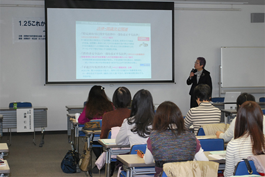
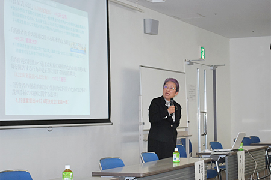
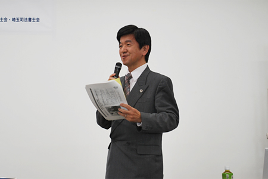

埼玉県消費者団体連絡会、消費者行政充実埼玉会議、NPO法人埼玉消費者被害をなくす会、埼玉県消費生活コンサルタントの会、埼玉弁護士会、埼玉司法書士会の6団体共催による「これからの消費者行政充実を考えるシンポジウム」が1月25日、さいたま市の浦和コミュニティセンターで開催されました。当日は、消費者庁 阿南 久長官にも出席いただき、消費者、弁護士・司法書士、消費生活相談員、教育関係、行政関係や議員、市民など70人が参加し、地域での消費者教育推進を一緒に考えました。
シンポジウムは、消費者が主体的に消費者市民社会の形成に参画し、発展に貢献できるよう積極的に支援するものとして一昨年12月に施行された「消費者教育の推進に関する法律」を受け、地域での消費者教育の実効的な推進を考えようと開催されたもので、充実会議事務局長の松苗弘幸弁護士の総合司会で始まりました。
はじめに主催6団体を代表して、埼玉消団連幹事の滝澤玲子さん（埼玉県生協ネットワーク協議会会長）が開会挨拶を述べました。
| 総合司会の松苗弘幸弁護士 | 開会挨拶する埼玉消団連 滝澤玲子幹事 |
国の消費者政策と基本方針
最初に消費者庁の阿南長官より「消費者行政充実に向けた消費者庁の取り組み～消費者教育推進法の地域での展開に向けて」と題し、この間の消費者庁の法制定関連の取り組み、法執行状況、リスクコミュニケーションの状況、今後の基本方針としての「消費者安心戦略」についてお話しいただき、消費者行政活性化基金後も、その理念の継承・具体化をすすめるものとして平成26年度予算案に財政措置を講じていることなど、消費者政策の基本方針について説明いただきました。
誰もが安心して暮らせる社会へ、消費者教育の推進を
消費者教育・啓発の推進については、消費者教育推進法の基本理念・概要、昨年6月に閣議決定された「消費者教育の推進に関する基本方針」についてお話しいただき、現在、国の基本方針のもとに3つの小委員会が設けられていること、今後、検討すべき課題についても説明いただきました。
阿南長官は、「消費者市民社会の構築は、地域が手をつながなければなりません。消費者誰もが安心して、安全で豊かに暮らせる社会の実現に向け、ともに歩みましょう」と呼びかけました。
|  |
| 国の消費者行政施策について消費者庁 阿南長官より講演いただきました |
地方消費者行政の現状と課題
消費者行政充実埼玉会議の池本誠司代表幹事（埼玉弁護士会会長）は、「地方消費者行政の現状と課題」として、地方消費者行政活性化基金前と比較しての地方消費者行政の現状と課題、自治体の役割について報告・提起されました。活性化基金の活用で、消費者相談を受ける、消費生活センターの窓口は広がってきましたが、消費者行政担当職員は減っており、国からの援助が行き届いていないこと、事業実施状況では、相談・あっせん件数が最近数年は減少しているものの、平成10年比で2倍以上で推移しており、高止まりしていること、今後も国により継続的な支援が必要であるとともに、相談処理の専門性と処遇の向上、担当職員の増員と資質向上、その上での被害防止、さらに消費者教育の推進と、地域での消費者力向上の課題について述べられました。
地域と学校から、継続的・体系的な消費者教育を
消費者教育は、地域社会における消費者教育と、学校現場における消費者教育の両面から、消費者教育の計画的・継続的な推進が求められており、いま私たちは、継続的・体系的な学習をすすめていきながら、「消費者教育推進地域協議会」の設置を求めていくこと、地元自治体での消費者教育推進担当職員の配置を求めていくよう、提起されました。
|  |
| 消費者教育推進を提起する充実会議の池本誠司代表幹事 |
地方行政の消費者施策と消費者教育について
行政からは、埼玉県内の消費者行政と教育・啓発の現状について、埼玉県県民生活部消費生活課主幹の伊藤 仁氏より「埼玉県消費生活基本計画」について、さいたま市市民生活部 消費生活総合センター所長の中島知行氏より「さいたま市における消費者教育の推進」について報告いただきました。
消費生活課伊藤主幹からは、平成24年度から5ヶ年の計画で事業中の基本計画の施策展開の4つの柱と具体的な取り組み、その中での消費者教育等の主な取り組みについて説明をいただきました。
さいたま市消費生活総合センターの中島所長からは、同市の消費者教育推進にあたっての課題と、消費者教育における優先課題について報告をいただきました。
高齢者被害と、高齢者の消費生活相談が高齢者人口の増加率を大きく上回っている現状を重視しての消費者教育の推進が最優先課題であるとし、消費者行政が行政全体の中で高い位置を占めるよう、国の後押しをと要望が述べられました。
| 埼玉県 県民生活部 消費生活課 伊藤 仁主幹 |
さいたま市 消費生活総合センター 中島知行所長 |
消費者教育の実践と課題（報告）
さらに関係団体等の取り組み報告として、各界から以下の報告が続いてされました。
 法律関係者から
法律関係者から
「埼玉弁護士会における消費者教育（高校生向け）」
埼玉弁護士会 久保田和志氏（埼玉弁護士会 消費者問題対策委員会委員長）
「埼玉司法書士会における法教育（高校生のための消費者講座）の現状」
埼玉司法書士会 戸澤 寛氏（埼玉司法書士会理事・法教育委員会委員長）
 消費生活相談の現場から
消費生活相談の現場から
「埼玉県消費生活支援センター啓発講座」
埼玉県消費生活支援センター春日部 主任消費生活相談員 佐藤洋子氏
 学校教育現場から
学校教育現場から
「高等学校における消費者教育の現状と取り組み」
埼玉県立松伏高等学校 教諭 岡田祐二氏
 消費者団体から
消費者団体から
「県内消費者団体の活動について」
埼玉県消費者団体連絡会 岩岡宏保氏（充実会議代表幹事、埼玉消団連事務局長）
| 埼玉弁護士会 久保田和志さん | 埼玉司法書士会 戸澤 寛さん |
| 消費生活相談員 佐藤洋子さん | 県立松伏高校教諭 岡田祐二さん |
| 埼玉消団連 岩岡宏保事務局長 | 閉会挨拶する埼玉司法書士会 知久公子会長 |
最後に、埼玉司法書士会会長 知久公子氏より閉会挨拶され、シンポジウムを終えました。